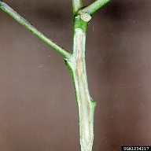
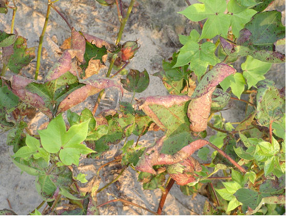
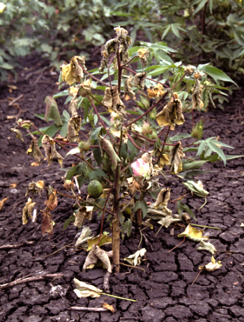
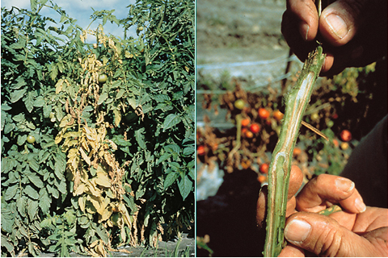
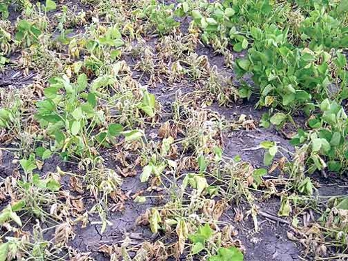

COTTON :: MAJOR DISEASE :: WILT
Wilt - Fusarium oxysporum f.sp. vasinfectum
Symptoms
The disease affects the crop at all stages. The earliest symptoms appear on the seedlings in the cotyledons which turn yellow and then brown. The base of petiole shows brown ring, followed by wilting and drying of the seedlings. In young and grown up plants, the first symptom is yellowing of edges of leaves and area around the veins i.e. discoloration starts from the margin and spreads towards the midrib. The leaves loose their turgidity, gradually turn brown, droop and finally drop off.
Symptoms start from the older leaves at the base, followed by younger ones towards the top, finally involving the branches and the whole plant. The defoliation or wilting may be complete leaving the stem alone standing in the field. Sometimes partial wilting occurs; where in only one portion of the plant is affected, the other remaining free. The taproot is usually stunted with less abundant laterals.
|  |  |
 |
|---|---|---|
Fusarium oxysporum f.sp. vasinfectum - Symptoms 1 |
Fusarium oxysporum f.sp. vasinfectum - Symptoms 2 |
Fusarium oxysporum f.sp. vasinfectum - Symptoms 3 |
Browning or blackening of vascular tissues is the other important symptom, black streaks or stripes may be seen extending upwards to the branches and downwards to lateral roots. In severe cases, discolouration may extend throughout the plant starting from roots extending to stem, leaves and even bolls. In transverse section, discoloured ring is seen in the woody tissues of stem. The plants affected later in the season are stunted with fewer bolls which are very small and open before they mature.
Pathogen
Macroconidia are 1 to 5 septate, hyaline, thin walled, falcate with tappering ends. The microconidia are hyaline, thin walled, spherical or elliptical, single or two celled. Chlamydospores are dark coloured and thick walled. The fungus also produces a vivotoxin, Fusaric acid which is partially responsible for wilting of the plants.
|  |  |
|---|---|
| Fusarium oxysporum f.sp. vasinfectum - Macro and microconidia 1 | Fusarium oxysporum f.sp. vasinfectum - Macro and microconidia 2 |
Favourable Conditions
- Soil temperature of 20-30˚C
- Hot and dry periods followed by rains
- Heavy black soils with an alkaline reaction
- Increased doses of nitrogen and phosphatic fertilizers
- Wounds caused by nematode (Meloidogyne incognita)and grubs of Ash weevil (Myllocerus pustulatus).
{kind=link}
{kind=link}
Disease cycle
The fungus can survive in soil as saprophyte for many years and chlamydospores act as resting spores. The pathogen is both externally and internally seed-borne. The primary infection is mainly from dormant hyphae and chlamydospores in the soil. The secondary spread is through conidia and chlamydospores which are disseminated by wind and irrigation water.
Management
- Treat the acid delinted seeds with Carboxin or Carbendazim at 2 g/kg.
- Remove and burn the infected plant debris in the soil after deep summer ploughing during June-July.
- Apply increased doses of potash with a balanced dose of nitrogenous and phosphatic fertilizers.
- Apply heavy doses of farm yard manure or other organic manures. Follow mixed cropping with non-host plants.
- Grow disease resistant varieties of G. hirsutum and G. barbadense like Varalakshmi, Vijay Pratap, Jayadhar and Verum.
- Spot drench with Carbendazim 1g/litre.